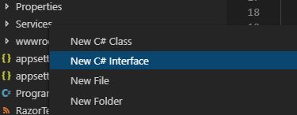
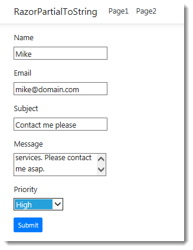
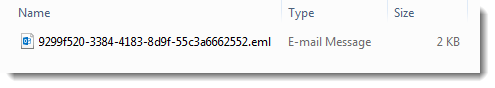
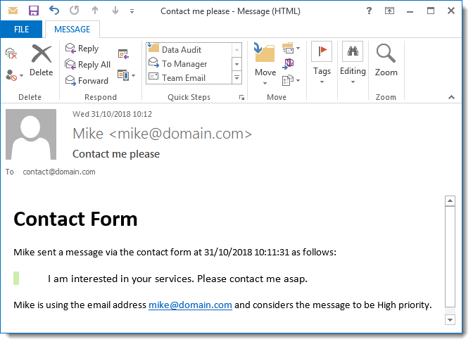

Partial Views or Pages are primarily used as a means of including reusable snippets of HTML within one or more Razor Pages. The power of the Razor templating system used in a partial can also be harnessed to generate HTML for other purposes, such as the body of a mail message.
The sample application to demonstrate this is built using Visual Studio Code, and assumes that you have the C# extension added, but the sample will work in Visual Studio too.
Create a folder in a suitable location and name it RazorPartialToString.
Open the folder within VS Code and bring up the terminal by pressing Ctrl+' (⌘+' on a Mac).
Create a new Razor Page application by typing
dotnet new razor. Whenever you get a message "Required assets to build and debug are missing... Add them?", click Yes.Create folder named Services by typing
mkdir Services.Add an interface to the Services folder named IRazorPartialToStringRenderer.cs. This is more easily accomplished if you have the C# Extensions extension installed in your VS Code. You can add the file by right-clicking on the folder:
The full code for the file follows:
using System.Threading.Tasks; namespace RazorPartialToString.Services { public interface IRazorPartialToStringRenderer { Task<string> RenderPartialToStringAsync<TModel>(string partialName, TModel model); } }Add a C# class file to the Services folder named RazorPartialToStringRenderer.cs with the following code:
using System; using System.IO; using System.Linq; using System.Threading.Tasks; using Microsoft.AspNetCore.Http; using Microsoft.AspNetCore.Mvc; using Microsoft.AspNetCore.Mvc.Abstractions; using Microsoft.AspNetCore.Mvc.ModelBinding; using Microsoft.AspNetCore.Mvc.Razor; using Microsoft.AspNetCore.Mvc.Rendering; using Microsoft.AspNetCore.Mvc.ViewEngines; using Microsoft.AspNetCore.Mvc.ViewFeatures; using Microsoft.AspNetCore.Routing; namespace RazorPartialToString.Services { public class RazorPartialToStringRenderer : IRazorPartialToStringRenderer { private IRazorViewEngine _viewEngine; private ITempDataProvider _tempDataProvider; private IServiceProvider _serviceProvider; public RazorPartialToStringRenderer( IRazorViewEngine viewEngine, ITempDataProvider tempDataProvider, IServiceProvider serviceProvider) { _viewEngine = viewEngine; _tempDataProvider = tempDataProvider; _serviceProvider = serviceProvider; } public async Task<string> RenderPartialToStringAsync<TModel>(string partialName, TModel model) { var actionContext = GetActionContext(); var partial = FindView(actionContext, partialName); using (var output = new StringWriter()) { var viewContext = new ViewContext( actionContext, partial, new ViewDataDictionary<TModel>( metadataProvider: new EmptyModelMetadataProvider(), modelState: new ModelStateDictionary()) { Model = model }, new TempDataDictionary( actionContext.HttpContext, _tempDataProvider), output, new HtmlHelperOptions() ); await partial.RenderAsync(viewContext); return output.ToString(); } } private IView FindView(ActionContext actionContext, string partialName) { var getPartialResult = _viewEngine.GetView(null, partialName, false); if (getPartialResult.Success) { return getPartialResult.View; } var findPartialResult = _viewEngine.FindView(actionContext, partialName, false); if (findPartialResult.Success) { return findPartialResult.View; } var searchedLocations = getPartialResult.SearchedLocations.Concat(findPartialResult.SearchedLocations); var errorMessage = string.Join( Environment.NewLine, new[] { $"Unable to find partial '{partialName}'. The following locations were searched:" }.Concat(searchedLocations)); ; throw new InvalidOperationException(errorMessage); } private ActionContext GetActionContext() { var httpContext = new DefaultHttpContext { RequestServices = _serviceProvider }; return new ActionContext(httpContext, new RouteData(), new ActionDescriptor()); } } }This code is responsible for locating the specified partial, and then rendering its output to a
StringWriter, and then returning the content of the writer as a string. Much of the code is similar to that found in the Partial Tag Helper source code.Add another interface to the Services folder, this time called IEmailService.cs with the following content:
using System.Threading.Tasks; namespace RazorPartialToString.Services { public interface IEmailService { Task SendAsync(string email, string name, string subject, string body); } }Now add the following implementation named DemoEmailService.cs:
using System.Net.Mail; using System.Threading.Tasks; namespace RazorPartialToString.Services { public class DemoEmailService : IEmailService { public async Task SendAsync(string email, string name, string subject, string body) { using (var smtp = new SmtpClient()) { smtp.DeliveryMethod = SmtpDeliveryMethod.SpecifiedPickupDirectory; smtp.PickupDirectoryLocation = @"c:\maildump"; var message = new MailMessage { Body = body, Subject = subject, From = new MailAddress(email, name), IsBodyHtml = true }; message.To.Add("[email protected]"); await smtp.SendMailAsync(message); } } } }This is just standard boiler-plate email sending code that uses the
SpecifiedPickupDirectorydelivery method, ensuring that any generated emails are placed in the specifiedPickupDirectoryLocationrather than actually being sent via an SMTP server. It enables easy testing of email functionality without being reliant on an Internet connection, or having to wait for the generated email to be delivered. There is nothing special about the location c:\maildump. Feel free to alter the actual location that the email will be saved in to suit your environment.Register the services in the
ConfigureServicesmethod in theStartupclass:services.AddMvc().SetCompatibilityVersion(CompatibilityVersion.Latest); services.AddTransient<IEmailService, DemoEmailService>(); services.AddTransient<IRazorPartialToStringRenderer, RazorPartialToStringRenderer>();Create a Contact page using the following command:
dotnet new page -n Contact -o Pages -na RazorPartialToString.PagesNote: this is only necessary if you are using ASP.NET Core 2.2. Previous versions of the Razor Pages project template included a basic Contact page.
Alter the content of the PageModel file (Contact.cshtml.cs) as below:
using System; using System.Collections.Generic; using System.Linq; using System.Threading.Tasks; using Microsoft.AspNetCore.Mvc; using Microsoft.AspNetCore.Mvc.RazorPages; using RazorPartialToString.Services; namespace RazorPartialToString.Pages { public class ContactModel : PageModel { private readonly IRazorPartialToStringRenderer _renderer; private readonly IEmailService _emailer; public ContactModel(IRazorPartialToStringRenderer renderer, IEmailService emailer) { _renderer = renderer; _emailer = emailer; } [BindProperty] public ContactForm ContactForm { get; set; } [TempData] public string PostResult {get;set;} public async Task<IActionResult> OnPostAsync() { var body = await _renderer.RenderPartialToStringAsync("_ContactEmailPartial", ContactForm); await _emailer.SendAsync(ContactForm.Name, ContactForm.Email, ContactForm.Subject, body); PostResult = "Check your specified pickup directory"; return RedirectToPage(); } } public class ContactForm { public string Email { get; set; } public string Message { get; set; } public string Name { get; set; } public string Subject { get; set; } public Priority Priority { get; set; } } public enum Priority { Low, Medium, High } }A wrapper class for some form values is declared (
ContactForm), and is added to the PageModel as a bound property. Its contents are passed to the string rendering service in theOnPostAsyncmethod to generate the body of an email, which is sent via the email service.Alter the content page (Contact.cshtml) so that it contains the following code:
@page @model RazorPartialToString.Pages.ContactModel @if(TempData["PostResult"] == null) { <form method="post"> <label asp-for="ContactForm.Name"></label> <div class="form-group"> <input asp-for="ContactForm.Name"> </div> <label asp-for="ContactForm.Email"></label> <div class="form-group"> <input asp-for="ContactForm.Email"> </div> <label asp-for="ContactForm.Subject"></label> <div class="form-group"> <input asp-for="ContactForm.Subject"> </div> <label asp-for="ContactForm.Message"></label> <div class="form-group"> <textarea asp-for="ContactForm.Message"></textarea> </div> <label asp-for="ContactForm.Priority"></label> <div class="form-group"> <select asp-for="ContactForm.Priority" asp-items="Html.GetEnumSelectList<Priority>()"> <option value="">Set Priority</option> </select> </div> <div class="form-group"> <button class="btn btn-sm btn-primary">Submit </button> </div> </form> } else { <p>@TempData["PostResult"]</p> }Create a new file in the Pages/Shared folder named _ContactEmailPartial.cshtml with the following code:
@model ContactForm @{ Layout = null; } <!DOCTYPE html> <html> <head> <title>Contact Email</title> <style> body{font-family:Calibri, sans-serif;font-size: 11pt;color: #555;} blockquote{border-left: 8px solid #cceeaa;font-size: 12pt;margin:0;padding: 30px 60px;} </style> </head> <body> <h1>Contact Form</h1> <p>@Model.Name sent a message via the contact form at @DateTime.Now as follows:</p> <blockquote>@Model.Message</blockquote> <p>@Model.Name is using the email address @Model.Email and considers the message to be @Model.Priority.ToString() priority.</p> </body> </html>This file acts as template for the body of the email message. It takes the
ContactFormclass as a model. Importantly, the layout page is set tonullto prevent the ViewStart file applying one. The styles for the HTML are specified inline because most desktop email clients don't support referencing external style sheets.Run the application by executing the
dotnet runcommand from the terminal.Navigate to
https://localhost:5001/contactand enter some values into the form
Press submit, and then check the location of your specified pickup directory as suggested in the message rendered to the browser. You should have a .eml file there:

When you open it in your default mail client, you should see a properly formatted email:
